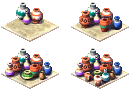

Pottery
Pottery is a manufactured good produced by the Potter workshop from clay. It is the first manufactured good your population demands — the moment a house tries to evolve past Ordinary Cottage it needs pottery delivered by a Bazaar, which makes a working pottery supply chain one of the earliest economic priorities on most missions.
Overview

Pottery is made at a Potter using clay, which is either produced locally by a Clay Pit or imported from another city over a trade route. Finished pottery is hauled by the workshop's cartpusher to a Storage Yard, from where Bazaar traders pick it up and distribute it to housing.
It belongs to the same category as Beer, Linen, Papyrus and the other goods consumed directly by housing. Because every house above the most basic tiers needs it, pottery demand grows with your population for the entire life of a city.
Production
| Property | Value | Notes |
|---|---|---|
| Producer | Potter workshop | 2×2 footprint; industry / commerce labor |
| Input | Clay | From a Clay Pit, stored clay, or import |
| Output | Pottery | Delivered to Storage Yard, then Bazaar → housing |
| Workers | 12 | Production scales with the share of workers present |
A Potter cannot work without clay. When placing one, the game warns if there is no active clay industry and no stored clay, and reminds you to set up an import route if clay is unavailable locally. Keep at least one Clay Pit (or a steady clay import) feeding the Potter, or production stalls.
Housing evolution
Pottery is the first good housing requires in order to evolve. The lower tiers — from Crude Hut up to and including Ordinary Cottage — need no pottery at all. Starting with the Modest Homestead tier and continuing through every tier above it, a house must receive pottery to evolve and to remain at its level:
- No pottery required: Crude Hut, Sturdy Hut, Meager Shanty, Common Shanty, Rough Cottage, Ordinary Cottage.
- Pottery required: Modest Homestead and every tier above it, up to the largest estates.
In practice this means a brand-new settlement can grow to Ordinary Cottages with food, water and a Bazaar alone — but the next step up the housing ladder is blocked until pottery reaches those houses. Building the clay→Potter→Bazaar chain early is what lets your first neighbourhood break past the cottage ceiling.
Trade & burial
Pottery can be exported, but it is a fairly mediocre export option: at roughly 105 debens per 100 units it fetches a low price for a finished good, so its value is almost always greater kept at home to evolve housing than sold abroad. Treat exporting pottery as a way to drain a surplus, not as a core income strategy.
Pottery is also sometimes requested as a burial provision, consumed alongside other goods for funerary needs on missions where that mechanic is active.
Developer reference
All paths relative to the repository root.
Workshop config — src/scripts/building/pottery.js
The Potter workshop declares its clay→pottery conversion and production rate:
building_pottery { input { resource : RESOURCE_CLAY } output { resource : RESOURCE_POTTERY } production_rate : 20 labor_category : LABOR_CATEGORY_INDUSTRY_COMMERCE building_size : 2 laborers[12] flags { is_workshop: true, is_industry: true } }
The same file's on_place_checks handler raises the #building_needs_clay warning when no clay industry is active and no clay is stored, plus the trade-route reminders when clay must be imported.
Housing requirement — src/scripts/houses.js
Each house tier lists a per-level pottery requirement array. The flag flips from 0 to 1 exactly at the Modest Homestead tier:
building_house_ordinary_cottage { pottery[0,0,0,0,0] } building_house_modest_homestead { pottery[1,1,1,1,1] } // every tier above modest_homestead also requires pottery
Resource enums — src/game/resource.h
RESOURCE_CLAY = 11 // Potter input; from Clay Pit or import RESOURCE_POTTERY = 13 // Potter output; distributed to housing by Bazaars